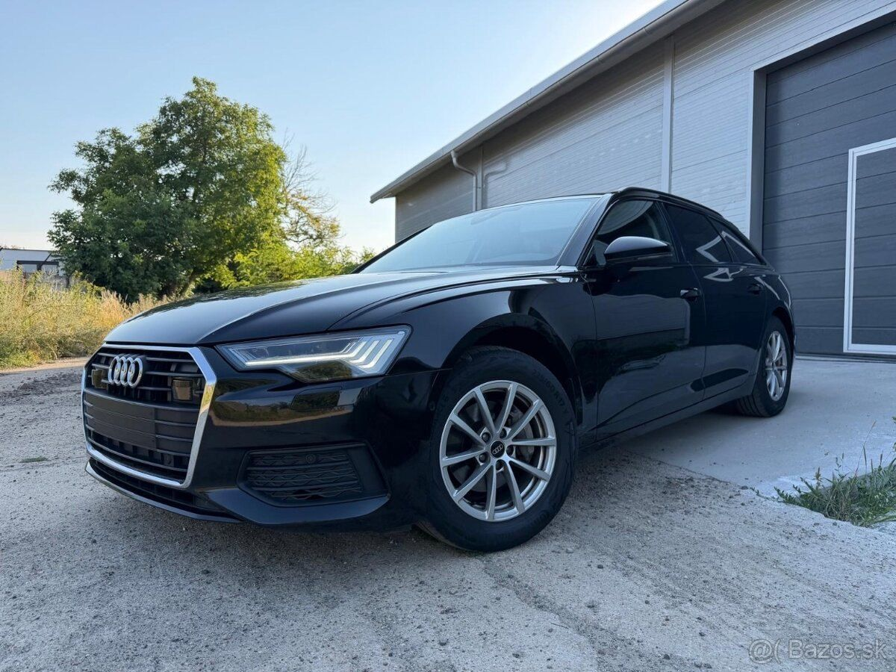

Úver alebo leasing na auto? Rozdiely, ktoré by ste mali poznať

Pri kúpe auta na splátky sa najčastejšie rozhodujete medzi spotrebiteľským úverom a leasingom. Na prvý pohľad vyzerajú podobne – auto máte hneď a platíte mesačne. Rozdiel je v detailoch.
Úver na auto
- Majiteľom auta ste vy od prvého dňa. V technickom preukaze ste zapísaný ako vlastník.
- Financujúca spoločnosť má často na auto záložné právo, kým úver nesplatíte.
- Hodí sa pre zamestnancov a súkromné osoby.
- Auto môžete kedykoľvek predať (po dohode so záložným veriteľom).
Leasing
- Majiteľom je leasingová spoločnosť, vy ste držiteľ a používateľ. Vlastníkom sa stanete až po splatení.
- Pre SZČO a firmy býva daňovo výhodnejší – splátky môžu ísť do nákladov podľa pravidiel, ktoré vám vysvetlí váš účtovník.
- Súčasťou býva povinné havarijné poistenie.
Čo si vybrať
| Úver | Leasing | |
|---|---|---|
| Vlastník auta | vy | leasingová spoločnosť |
| Pre koho | súkromné osoby, zamestnanci | SZČO, firmy |
| Havarijné poistenie | podľa podmienok | zvyčajne povinné |
Nie je jedno správne riešenie pre všetkých. Pri výbere sa pozrite na celkovú sumu, ktorú zaplatíte, a na to, či auto potrebujete na súkromné alebo firemné účely. Radi vám obe možnosti porovnáme na konkrétnom aute.